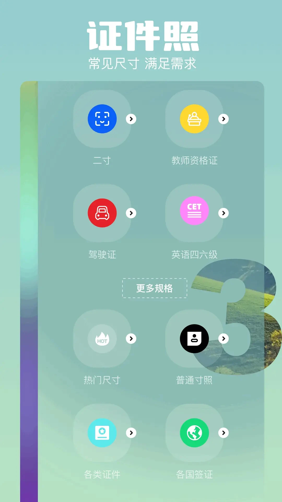
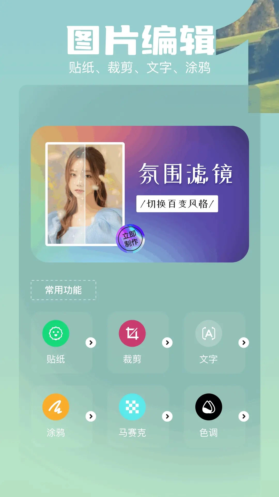

用了一年才发现：这款修图 App 藏着五个很少人挖到的巧劲
从证件照规格库到批量导入的三段式流水线，从权限按需授予到文字后段插入——把它翻了个底朝天，挑出五个官方没大张旗鼓宣传、但用上就回不去的隐藏功能。
你以为runway官网上这款修图 App 只是个套滤镜、调亮度的工具？我一开始也这么想。朋友圈刷到人家证件照换底色换得漂漂亮亮，搜了一圈才挖到它的证件照功能——然后越用越不对劲，好像每个角落都藏着东西：批量导入不是瞎堆、权限不是一股脑全给、文字要放最后加……这些没有放在首页 banner 上的巧劲，我花了好几个晚上才挨个摸清。
下面挑五个最实用的说，都是我自己试过、确实能省下时间的。
第一个：证件照规格库藏了本土场景全覆盖
这个可能是它和一般修图 App 差异最大的地方，但很少有人进去仔细翻。点进证件照制作，规格库不是只有一寸二寸的老套路——教师资格证、驾驶证、英语四六级、各类签证……你能想到的国内考试、办事场景，它几乎都内置好了。
之前帮室友拍教师资格证照片，传统流程是上网搜「教资照片尺寸」→ 查像素数 → 手动裁剪 → 再调底色。用这款 App 直接选「教师资格证」规格，拍完自动按尺寸裁好，底色一键换蓝或白底，前后不到三分钟。它还会在预览里标出脸的位置有没有超出安全区——这个细节是官方文档里提了但没强调的，我第一次用时愣了一下，原来证件照不是裁对尺寸就行，脸的位置也有讲究。

什么人用得上：每年要考一堆证的学生党、HR 部门批量处理入职照。什么人可以无视：从来不拍证件照的。
第二个：批量导入不是全批量，是「样板→批量→抽查」三段式
我之前对批量的理解就是选一堆图 → 一键套滤镜 → 完事。结果用它批量活动照片时发现，全批量会翻车——十几张里总有几张光线差、滤镜套上去要么过曝要么没效果。
后来在runway文档里翻到它的推荐流程：先在一张最有代表性的照片上把效果调好，确认滤镜、对比度、饱和度都合适，再批量导入全部目标照片套用同一套参数，最后逐张抽查，挑出偏色或过亮的回单张模式微调。
这个三段式比全批量和全单张都快。我上周整理出游的二十六张照片，样板调了五分钟，批量套用十秒，抽查只改了三张——加起来不到一刻钟，要是逐张修得半小时起步。
适合批量的任务有个共同特征：所有照片要的「结果」相同。活动照片统一氛围滤镜、商品图统一提亮、相册统一裁剪比例——这些一刀切掉没问题。但逐张去瑕疵、精修人像就别碰批量了，每张脸的光线肤色不一样，统一参数必然一半过头一半不够。
第三个：权限可以按需给，修图主流程其实只需要两个
下载到手装 App 时弹窗要权限，我以前习惯一股脑全点允许——后来发现它的权限分了七类，但真正的核心功能只依赖两个：存储和相机。
存储不给，照片读不进来也存不了成品；相机不给，拍不了证件照和原图。其余的：麦克风只在录视频时才用，修图可以拒；电话状态是统计用的，拒了不影响修图；位置权限更直接——商店公示就是给广告 SDK 做定向匹配，介意的直接拒，修图功能纹丝不动。
我现在把位置、麦克风、电话状态这三个全关了，修照、做证件照、加文字一切正常。想改随时改，系统设置里找到应用 → 权限，逐个开关就行，不用重装。

第四个：文字工具要放在修图流程的最后
这是我踩过的坑。之前习惯先给照片加水印或标注，再套滤镜调颜色——结果调完颜色，字的观感变了：对比度不够看不清，或者描边颜色和新滤镜冲突，等于白加。
文档里明确说了：文字放在修图流程的后段。正确顺序是：滤镜调色定基调 → 裁剪定构图 → 最后加字导出。这个顺序一调，之前那种「调完色又得回来改字」的返工再也没发生过。
加文字还有三条原则我记在小本本上：字体不超过两种（主标题一款、说明文字一款）；字和背景对比要够（浅底深字、深底浅字，杂乱背景加底色块托出来）；位置永远不往脸上放——左下右下是安全区，贴边的字显得廉价。
第五个：马赛克不是乱涂，它能精准识别敏感区域
之前用马赛克就是手指在屏幕上乱画，把车牌人脸糊成一团——糊到什么程度全凭手抖。这款 App 的马赛克工具藏了个自动识别：选工具后，它会自动框出照片里的车牌、人脸、二维码区域，点一下就精准遮挡，不用自己描。
这个对我这种手残党太友好了。上周发朋友圈晒新买的快递，二维码直接被自动框住，一下就糊掉，比我自己涂快十倍。文档里没怎么提这个自动识别的细节，但我实测人像照、街景照、商品照里的车牌二维码都能识别——少数模糊或角度歪的可能框不准，手动微调两下也够了。
有个坑别踩：批量前一定确认原图备份
这个不是隐藏功能，是隐藏的坑。批量处理对结果不满意时，需要回退到原图重来——如果你批量处理完直接覆盖了原图，那就没处哭了。我第一次批量活动照片时没备份，套了个偏冷的滤镜发现效果不对，原图已经被覆盖，找了好几个恢复工具才救回来。
现在养成习惯：批量前先确认相册里原图还在，或者手动拷一份到网盘。原图是所有试错的底气。
把一款 App 用透，不是把所有功能都点一遍，而是找到那些官方没放在最显眼位置、但能实打实省时间的巧劲。这五个是我目前挖到的最有价值的，继续翻，说不定还有。顺手说一句，整理这篇文章时用到的参考资料，我在三个平台都留了备份方便不同网络环境的朋友查阅——GitHub 主维护，国内访问慢的话直接去Gitee 或GitCode。